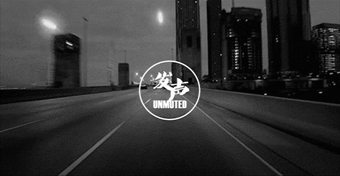
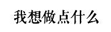
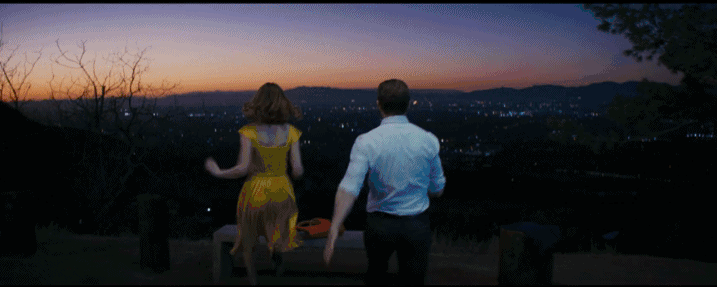
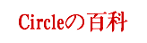
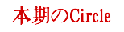
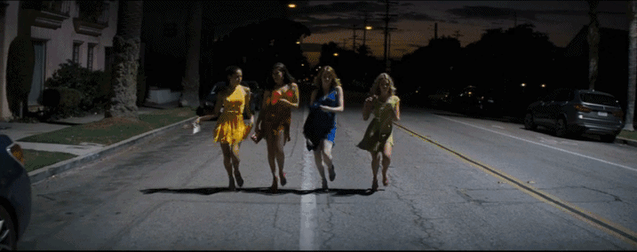
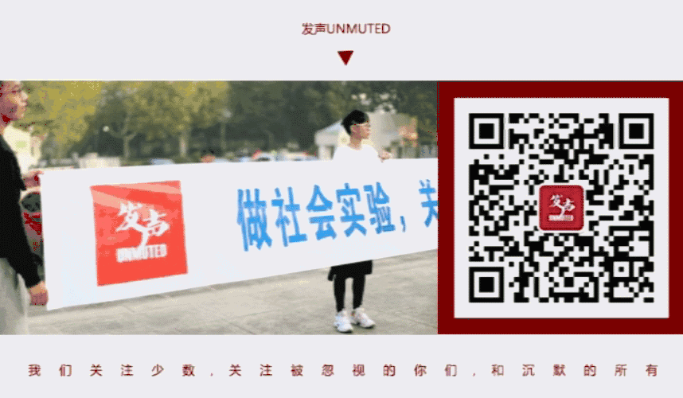

Circle@UNMUTED | 常规活动(Circle)成员招募

2017/03/18
Circle@UNMUTED发声 I

● ● ● ● ●
十几二十岁的我们
也有试图改变世界的决心
@花花
作为曾经被招募成为发声·杭马彩虹跑的一名志愿者，成为UNMUTED发声大家庭的一员是我2016年最特别的一件事。
去年的杭州马拉松，我第一次和相同理念的人，着装一致，脸上画着相同的彩虹Logo，拉着横幅奔跑时，我能感觉到每个人都像珍惜着东西似的，攥得紧紧的。
那也是第一次，我直面我们生活的社会。我们拥有不同的喜好，不同的性向。我们那么不一样，但之于平等的态度，却又惊人地相似。
被发声团队尊称“元老级”志愿者，我实在是受宠若惊。但若今后有机会，我想我一定会再回来，和发声的朋友们，再做些什么。

我们在两个月前收到这封来信，后台的每一位编辑都近乎热泪盈眶。我们没有想到，只是迈出的一小步，集合的一小群人，也有打动人心的力量。在发声UNMUTED公众号全新出发的开始，我们再一次感谢，过去一年多，关注我们，支持我们，加入我们的，每一个你。
杭马是我们的线下活动的开始，发声UNMUTED欣喜在活动中遇见的所有善良的心，也洞见了更多可能。终于，我们要开始定期举办我们的线上线下活动（Circle）了。

“定期活动到底是个啥”
活动时间：一期circle持续两个月，circle期间会持续有线上交流，同时每两周会在周末举行一次线下活动。
活动地点：视活动内容而定。
活动形式：线上活动(idea spreading)电子书单共享、电影赏析等；线下活动(sense experiencing)有破冰、静吧沙龙、剧本表演等。形式包括但不限于此。
活动对象：6名圈外成员，6名LGBTQ+成员（每两个月更换名单）
对于圈外的你们，无论你对这个群体是否有足够的了解，无论你是否曾为他们发过声，通过circle，我们希望你可以真正走进他们的生活，了解他们并在以后的日子里为他们发声。
对于圈内的你们，circle也许能让你们更好地了解自己。同时我们也相信，circle能够唤起更多人的平权意识，壮大LGBTQA群体的力量。
除此之外，你们还会获得一段非同寻常的友谊。

“我想见到你”
第一次活动时间：本周六（3.18）上午，具体时间小助手会添加你为好友，并会拉群通知大家。
和我们一起经历第一期活动的的你们
还会获得发声unmuted的特别纪念品！
更多细节与有趣的活动不在此透露！
等你自己来探索！
成员招募/6_RzcfuahaduLV80zK5gIn7R6t0t9frQ.jpg)
△
我们希望和你在Circle遇见
一起阅读感知平权的力量
△
我们也会一起出行
爬山看日出 和你共享第一缕阳光
成员招募/8_tsq6Lw1XTibiaQwdM1po81FBD1u0YA.jpg)
△
《月光男孩》赢得最佳影片
我们也得以一窥其内心
成员招募/9_PeJMjP09JxYgIiaibg66iaAwtCKYOw.png)
△
我们会选取性取向相关的剧本
以自己的方式
在舞台上诠释每一个角色
“我们只想要你”
招募对象：6名圈外成员，6名LGBTQ+成员将作为Circle@UNMUTED第一期Circle成员参与活动。
招募要求：坐标杭州、对平权事业有热忱、渴望倾听不一样的声音、能够与他人良好沟通
报名方式：将“姓名+联系方式+微信号+性向”发送至后台，我们的工作人员将及时联系你。
报名及活动费用：活动费用我们全包！

图片/来源于网络
文案/发声UNMUTED
版权所有 转载请联系原公众号后台
